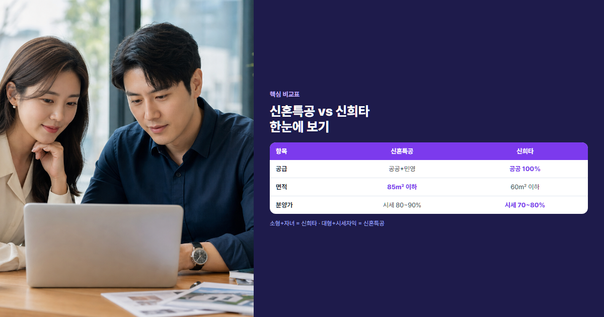

신혼특공 vs 신혼희망타운, 저희 부부는 이렇게 골랐어요
이름은 비슷한데 조건·물량·분양가가 전혀 다릅니다
"신혼특공? 신희타? 뭐가 다르고 뭐가 유리하지?" 결혼하고 청약을 알아보면 가장 먼저 듣는 두 이름입니다. 둘 다 신혼부부 우대 청약이지만, 공급 유형·평형·분양가·가점 구조가 달라 잘못 고르면 당첨 확률이 크게 달라집니다. 2026년 기준으로 자격·물량·배점·수익공유형 모기지까지 한 번에 정리했습니다.
- 신혼부부 특별공급(신혼특공)과 신혼희망타운(신희타)의 자격·물량·신청 절차를 표로 비교합니다.
- 소득·자녀·평형·혼인기간에 따른 맞춤 시나리오와 혼인 기간별 로드맵을 제시합니다.
- 청약통장·무주택 기간·청약 가점 계산기와 연결해 실전 전략을 잡을 수 있습니다.
본론 1. 신혼부부 특별공급(신혼특공) 완전 분석
신혼특공이란?
신혼부부 특별공급은 혼인 7년 이내 무주택 부부를 위한 청약 제도입니다. 공공분양과 민영주택 모두에서 별도 물량이 배정되며, 일반공급보다 경쟁률이 낮은 편입니다. 수도권 민영 아파트에서 일반공급 경쟁률이 수십 대 일인 반면, 신혼특공은 물량의 18%가 따로 잡혀 있어 실질 기회가 더 큽니다. 신혼부부 우대 정책의 대표 격으로, "결혼했으니 청약 한 번 넣어 볼까?" 할 때 가장 먼저 검토하는 제도입니다.
자격 조건 상세
| 항목 | 조건 |
|---|---|
| 혼인기간 | 7년 이내 |
| 무주택 | 세대구성원 전원 무주택 |
| 청약통장 | 6개월 이상 가입 + 6회 이상 납입 |
| 소득 | 도시근로자 월평균 소득 130% 이하 (맞벌이 140%) |
| 자산 | 부동산 3.31억원, 자동차 3,708만원 이하 |
예비 신혼부부(1년 이내 결혼 예정)도 신청할 수 있으며, 한부모 가족(만 6세 이하 자녀)도 동일 물량에 신청 가능합니다. 재혼 부부도 혼인기간 7년 이내면 자격이 됩니다. 단, 세대 전체가 무주택이어야 하므로 부모님 명의 주택이 있으면 탈락합니다.
물량 배정 및 우선순위
- 공공분양 신혼특공: 해당 단지 물량의 30%
- 민영주택 신혼특공: 해당 단지 물량의 18%
- 신혼특공 내에서 우선공급 70% + 일반공급 30%로 나뉩니다
- 우선공급 대상: 소득 100% 이하 (맞벌이 120% 이하)
- 가점 요소: 자녀 수, 혼인기간, 해당 지역 거주기간, 청약통장 납입 회차 등
💡 신혼특공 꿀팁
신청 방법 및 절차
청약홈(applyhome.co.kr)에서 청약 기간에 맞춰 신청합니다. 필요 서류로는 혼인관계증명서, 주민등록등본, 소득증빙(건강보험·지방세 등), 청약통장 납입 확인서 등이 있습니다. 서류 심사 후 당첨자 발표 → 계약 → 잔금 순으로 진행됩니다. 대출은 디딤돌·보금자리론 등 정책대출과 시중은행 주담대를 선택할 수 있습니다. 당첨 후 6개월 내 계약하지 않으면 당첨이 취소될 수 있으니 대출 한도를 미리 조회해 두세요.
본론 2. 신혼희망타운(신희타) 완전 분석
신혼희망타운이란?
신혼희망타운은 신혼부부·예비 신혼부부·한부모 가족 전용 공공분양 제도입니다. LH·SH 등 공공기관이 전용 60㎡ 이하(약 21~25평형) 소형 위주로 공급하며, 분양가는 인근 시세 대비 70~80% 수준입니다. 선택 시 수익공유형 모기지를 이용하면 초기 대출 부담을 크게 줄일 수 있습니다. 신혼특공과 달리 민영주택에는 해당하지 않고, 공공분양만 대상입니다.
자격 조건 상세
| 항목 | 조건 |
|---|---|
| 혼인기간 | 7년 이내 (예비 부부 포함) |
| 무주택 | 세대구성원 전원 무주택 |
| 청약통장 | 6개월 이상 가입 + 6회 이상 납입 |
| 소득 | 도시근로자 130% 이하 (맞벌이 140%) |
| 자산 | 부동산·자동차 기준 (신혼특공과 유사) |
기본 자격은 신혼특공과 비슷하지만, 신희타는 자녀 수 배점 비중이 더 큽니다. 혼인기간이 짧을수록 잔여공급 가점에서 유리하므로, 결혼 1~2년차에 신희타를 노리는 전략이 흔합니다.
배점 시스템
- 우선공급(30%): 만 6세 이하 자녀가 있는 신혼부부
- 잔여공급(70%): 자녀 없어도 신청 가능
- 공통 가점: 가구 소득(0~3점), 해당 지역 연속 거주(0~3점), 청약통장 납입 회차(0~3점)
- 잔여공급 추가 가점: 혼인기간(0~3점, 짧을수록 유리), 자녀 수(0~3점), 무주택 기간(0~3점)

수익공유형 모기지
수익공유형 모기지는 분양가의 최대 70%를 연 1.3% 저금리로 30년 만기 대출받는 제도입니다. 매각·상환 시 시세차익의 30~50%를 정부와 공유합니다. 장점은 초기 자기자금·월 상환 부담이 줄어든다는 점이고, 단점은 나중에 팔 때 차익 일부를 돌려줘야 한다는 점입니다. 예를 들어 분양가 3억원, 시세 4억원에 매도 시 차익 1억원 중 30%인 3,000만원을 공유하면 본인 몫은 7,000만원입니다. 수익공유형을 쓰지 않으면 일반 주담대·정책대출로 계약할 수 있습니다.
💡 수익공유형 선택 가이드
- 자기자금이 1억원 미만이면 수익공유형으로 월 상환액을 줄이는 편이 유리합니다.
- 5년 이상 거주 후 매도 계획이면 차익 공유 비율(30~50%)을 미리 계산해 보세요.
- 장기 보유·전세 전환 목적이면 일반 대출이 시세차익 100% 본인 소유에 유리할 수 있습니다.
핵심 비교표 + 해설
| 비교 항목 | 신혼특공 | 신혼희망타운 |
|---|---|---|
| 공급 유형 | 공공+민영 ⭐ | 공공만 |
| 면적 | 다양 (85㎡ 이하) ⭐ | 60㎡ 이하 (소형) |
| 물량 | 공공 30%, 민영 18% | 전용 100% ⭐ |
| 분양가 | 시세 80~90% | 시세 70~80% ⭐ |
| 자녀 유리 | 우선공급에만 유리 | 배점 큼 ⭐ |
| 혼인기간 | 7년 이내 | 7년 이내 (짧을수록 유리) |
| 대출 | 일반 대출 ⭐ | 수익공유형 (선택) |
| 시세차익 | 본인 소유 ⭐ | 정부와 공유 (선택 시) |
30평대 이상·시세차익 온전히 원하면 신혼특공이 유리하고, 소형·저렴한 분양가·자녀 가점이 중요하면 신희타가 유리합니다. 민영 아파트도 고려한다면 신혼특공만 해당되고, 공공분양만 본다면 신희타 물량이 100% 전용이라 선택지가 명확합니다.
본론 3. 어떤 게 나에게 유리한가? — 시나리오
신혼특공이 유리한 경우
- 30평대 이상(60㎡ 초과) 원함
- 시세차익을 본인이 온전히 갖고 싶음
- 민영주택도 함께 고려 중
- 지역 선택폭을 넓게 원함
- 자녀 없이 부부 둘만, 소득 여유 있음
사례: 결혼 3년차 맞벌이, 합산 연소득 8,000만원, 30평대 원함. 수도권 민영 아파트 신혼특공 18% 물량에 청약하고, 가점은 무주택 기간·통장 납입으로 보완합니다. 신희타는 60㎡ 제한이라 평형이 맞지 않습니다. 2026년 기준 도시근로자 월평균 소득 130%는 약 월 780만원 수준이므로, 맞벌이 140%(약 월 840만원)까지 소득 요건을 충족하면 신혼특공 자격은 확보됩니다.
신혼희망타운이 유리한 경우
- 20평대 소형 평형 OK
- 저렴한 분양가가 최우선
- 자녀 1명 이상 (또는 임신·출산 예정)
- 대출 부담을 줄이고 싶음 (수익공유형 활용)
- 혼인 2년 이내 — 혼인기간 가점 유리
사례: 결혼 1년차, 아기 임신 중, 합산 연소득 6,000만원. 신희타 잔여공급에서 혼인기간·자녀(출산 후) 가점을 받고, 수익공유형 모기지로 초기 부담을 줄입니다. 분양가 2.5억원, 시세 3.5억원이면 1억원 차익 중 30%만 공유해도 실익이 큽니다.
둘 다 신청 가능한가?
원칙적으로 별도 청약이므로 각각 신청할 수 있습니다. 다만 한쪽에 당첨되면 재당첨 제한(5~10년)이 적용되어 다른 청약 당첨이 제한됩니다. 동시에 여러 곳에 넣되, 당첨 후 계약은 신중히 결정하세요.
⚠️ 절대 결론
소형 + 자녀 = 신희타, 대형 + 시세차익 = 신혼특공. 상황에 따라 두 제도를 병행해 넣되, 본인 평형·소득·자녀 계획에 맞는 쪽에 집중하는 것이 좋습니다.
신혼부부 청약 전략 로드맵
결혼 전 (예비 부부)
청약통장을 최소 24회 이상 납입할 목표로 가입하세요. 예비 신혼부부도 신혼특공·신희타 신청이 가능합니다. 혼인신고 전에 무주택 상태를 유지하고, 부모님과의 세대 분리도 확인하세요.
결혼 1~3년차
신혼희망타운이 가장 유리한 시기입니다. 혼인기간 가점이 높고, 자녀 계획과 맞물리면 우선공급·잔여공급 모두 기회가 있습니다. 3기 신도시(왕숙·교산·계양) 사전청약도 함께 체크하세요. 이 시기에는 청약 가점 계산기로 무주택·통장·부양가족 점수를 월 1회 점검하는 습관을 들이면 좋습니다. 신희타 공고가 뜨면 우선공급(자녀)과 잔여공급 중 본인에게 맞는 트랙을 먼저 정한 뒤 청약하세요.
결혼 4~7년차
신혼특공을 적극 활용합니다. 부양가족 수가 늘면 가점이 오르고, 무주택 기간도 쌓입니다. 무주택 기간 인정을 꼼꼼히 관리하세요.
결혼 7년 초과
신혼 청약 자격이 상실됩니다. 일반공급·생애최초 특별공급으로 전환해야 합니다. 혼인 7년이 다가오면 마지막 신혼 청약 일정을 놓치지 마세요.
자주 묻는 질문 (FAQ)
Q1. 신혼특공과 신희타 둘 다 신청 가능한가요?
네, 각각 별도 청약이므로 동시에 신청할 수 있습니다. 단, 한쪽 당첨 후 계약 시 재당첨 제한이 걸리므로 우선순위를 정해 두세요.
Q2. 예비 신혼부부도 신청 가능한가요?
1년 이내 결혼 예정이면 예비 신혼부부로 신혼특공·신희타 모두 신청 가능합니다. 혼인신고일·예식일 증빙이 필요합니다.
Q3. 자녀가 없어도 유리한 쪽은?
자녀가 없으면 신혼특공 일반공급이나 신희타 잔여공급에서 혼인기간·무주택 기간 가점으로 승부합니다. 혼인 2년 이내라면 신희타 잔여공급, 30평 이상 원하면 신혼특공이 낫습니다.
Q4. 재혼 부부도 신혼특공 대상인가요?
재혼 포함 혼인기간 7년 이내, 세대 전원 무주택이면 신혼특공·신희타 모두 가능합니다. 이전 배우자와의 주택 보유 이력은 세대 기준으로 판단됩니다.
Q5. 수익공유형 모기지, 안 쓰면 어떻게 되나요?
선택 사항입니다. 쓰지 않으면 디딤돌·보금자리론·시중은행 주담대로 계약하면 되고, 시세차익 공유 의무가 없습니다.
Q6. 신희타 당첨 후 매도하면 얼마 남나요?
매도 시세에서 분양가·대출원금을 빼고, 차익의 30~50%를 정부에 납부합니다. 거주 의무 기간(통상 5년)을 지키지 않으면 추가 제재가 있을 수 있습니다.
Q7. 3기 신도시 신혼 물량은 얼마나 되나요?
단지마다 다르지만 신혼특공·신혼희망타운 물량이 별도 배정됩니다. 왕숙·교산·계양 등 3기 신도시 공고에서 신혼 물량 비율을 확인하세요. 일반적으로 민영 분양 단지에서는 신혼특공 18%, 공공분양에서는 신혼특공 30% 또는 신희타 100% 전용 물량이 잡힙니다. 사전청약 당첨 시 본청약 우선권이 주어지는 경우가 많으니 일정을 놓치지 마세요.
결론
① 신혼특공은 공공+민영, 넓은 평형, 시세차익 100% 본인 소유가 강점입니다. ② 신혼희망타운은 소형·저렴한 분양가·자녀 가점·수익공유형 대출이 강점입니다. ③ 소득·자녀·원하는 평형에 맞춰 선택하고, 청약통장·무주택 기간은 지금부터 관리하세요.

본 글은 2026년 7월 기준 일반 정보이며, 신혼특공·신희타 자격·배점·분양가는 법령·고시·단지별 공고에 따라 달라질 수 있습니다. 청약 신청 전 청약홈·해당 공고문에서 최종 확인하시기 바랍니다.